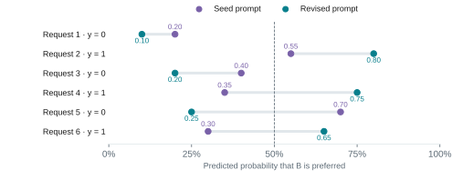
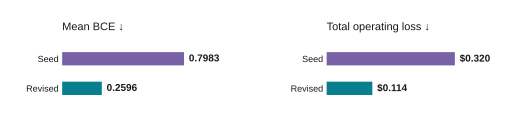
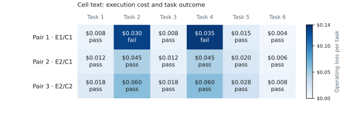
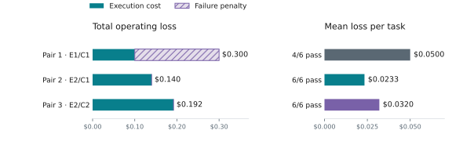

5. Examples of tuning¶
These examples apply the objectives, candidate design, and losses described in Tuning Foundations.
The following are independent examples of configuration tuning. One changes the instruction used to choose an execution configuration and scores its predictions. The other holds the routing algorithm settings fixed, swaps the execution model pair, and scores the resulting task outcomes. In each experiment, the objective and its scoring rule stay fixed across candidates.
5.a. Prompt tuning with GEPA¶
This example uses the execution configurations, outcomes, and reference labels from the example configuration comparison.
What changes: the instruction for a decision model that selects an execution configuration. What is scored: negative mean BCE for this two-choice example. With more choices, use negative mean categorical cross-entropy.
GEPA improves a prompt by trying revisions. Run the decision model on labeled examples, show another LLM where it struggled, and ask it to rewrite the instructions. That LLM is the reflector. Evaluate the rewrite and repeat; model weights stay fixed. DSPy provides the optimizer; supply the decision model, examples, and scoring function. See the GEPA paper.
- Predict and score: run the current prompt and compute BCE against the reference labels.
- Reflect and rewrite: use the errors and their context to propose a revised instruction.
- Evaluate: compare candidate probabilities on validation data and repeat within the budget.
Hold the decision model, execution configurations, labels, and scoring rule fixed while comparing prompts. Give the reflector the application, choice meanings, inference-time inputs, current prompt, training labels, probabilities, and measured outcomes that explain the labels.
Suggested reflector instruction¶
- Improve this decision model's instruction for the application described above. The reference choice minimizes execution cost plus a $0.10 penalty for failure.
- Minimize mean log loss using the supplied labels and probabilities. Keep uncertainty when the input is ambiguous.
- Find rules that explain several examples. You may change the structure, add useful domain categories, or rewrite the prompt completely.
- Use only information available at inference time. Leave out example IDs, copied examples, answer lists, and one-off exceptions. Return the revised instruction.
Return score = -loss. GEPA maximizes its score. Include text feedback that
explains the reference choice and the prediction's loss. With negative BCE,
failed executions must receive a sufficiently negative score; zero would
incorrectly reward failure. If probabilities are clipped for numerical stability,
choose a failure score below the worst valid clipped score. See
DSPy's GEPA metric and failure-score interface.
When decision calls are cheap, use larger reflection batches and try more prompts within the budget. Check promising candidates on the full validation set so one unusual batch does not decide the winner. Budget for the reflector too; repeating identical deterministic calls adds no evidence.
Allow the reflector to reorganize rules or replace a weak framing. Avoid imposing a short word limit before checking whether extra detail helps. Validate useful distinctions rather than treating prompt length as evidence of overfitting.
Compare prompt candidates¶
The probabilities below are illustrative, not outputs from a live GEPA run.


Figure 1. Seed and revised prompt probabilities (top), with mean BCE and total operating loss (bottom). The dashed line marks the illustrative 0.5 decision threshold.
The revised prompt wins on probability loss: mean BCE falls from 0.7983 to 0.2596.
- For request 4, increasing B's probability from 0.35 to 0.75 reduces its loss from 1.050 to 0.288.
- For request 5, reducing B's probability from 0.70 to 0.25 reduces its loss from 1.204 to 0.288.
- At a threshold of 0.5, the seed causes two task failures and $0.320 total operating loss. The revision causes no failures and $0.114 total loss across six requests. These totals exclude router inference cost.
Illustrative revised instruction¶
Estimate the probability that B has lower operating loss than A. Prefer A for routine work it can reliably complete at lower cost. Consider B when better reasoning justifies its cost. Account for verified cache savings and stale context. Preserve uncertainty when the evidence does not establish a clear preference.
Tune the threshold on validation operating outcomes. Reuse cached probabilities. Thresholds change decisions, not BCE. Retune after a prompt change because the probability scale can shift.
The 0.5 cutoff here applies to the example's predicted preference probability.
The stage router's confidence_threshold controls an ambiguous band in a
tool-signal score; that score is not automatically a calibrated probability for
these labels. Follow the
stage-router threshold guide
when tuning that setting. Use the probability and policy defined by the actual
decision question when applying this example to a classifier.
5.b. Model-pair selection with fixed algorithm settings¶
In this example, each candidate uses the same routing algorithm and settings but assigns different models to the efficient and capable tiers. The question is which model pair best supports the objective under that fixed routing policy.
What changes: the efficient/capable model pair. What is scored: mean operating loss across completed tasks.
Define the experiment¶
Keep the following conditions fixed:
- Algorithm:
stage_router, withpicker = "efficient_first". - Routing settings:
confidence_threshold = 0.5,recent_turn_window = 5,capable_hold_turns = 2, andefficient_hold_turns = 0; no optional classifier. - Evaluation: the same six tasks, agent instructions, tools, per-task limits, cache setup procedure, and number of trials. Pin each model's version and serving configuration. Keep all other algorithm settings fixed.
- Objective: minimize mean execution cost plus a $0.10 penalty per failed task. Count all billed model calls, including retries and cache charges.
Test three candidate pairs. The model IDs below are fictional:
- Pair 1: efficient model E1, capable model C1.
- Pair 2: efficient model E2, capable model C1. Relative to Pair 1, this changes only the efficient model.
- Pair 3: efficient model E2, capable model C2. Relative to Pair 2, this changes only the capable model.
Run each pair on the full task set. Fixed algorithm settings do not imply the same routing decisions: changing a model can change its outputs, tool results, and the later routing signals. Measure each pair's complete runs, including these effects. See Choose Models for compatibility checks before running the comparison.
Measure outcomes and calculate loss¶
The following task costs and pass/fail outcomes are dummy data. They illustrate the experiment and are not results for real models.


Figure 2. Execution cost and task outcomes for three model pairs under the same algorithm settings. Failure penalties contribute to the objective but are not billed execution costs.
For every task, add its execution cost and the failure penalty, if any. Average these task losses to score the pair:
- Pair 1: total execution cost is $0.100 and 4 of 6 tasks pass. Two failures add $0.200, giving $0.300 total operating loss, or $0.0500 per task.
- Pair 2: total execution cost is $0.140 and 6 of 6 tasks pass. No failure penalty applies, giving $0.140 total operating loss, or $0.0233 per task.
- Pair 3: total execution cost is $0.192 and 6 of 6 tasks pass. No failure penalty applies, giving $0.192 total operating loss, or $0.0320 per task.
For example, on task 2, Pair 1 costs $0.030 and fails, so its operating loss is $0.130. Pair 2 costs $0.045 and passes, so its operating loss is $0.045. The higher execution cost is justified under the chosen failure penalty.
Select Pair 2 under this objective. Pair 1 has the lowest billed cost but the highest operating loss once failures are counted. Pair 3 costs more than Pair 2 without improving task success on this sample. The algorithm settings stayed fixed throughout; the model pair changed.
This comparison scores measured task outcomes directly. It does not require reference-choice probabilities or cross-entropy. The loss must match the outcome being optimized and the kind of candidate being evaluated. Repeat the experiment on representative tasks and independent trials before drawing conclusions about real model pairs.
Reproduce the calculations¶
The code below uses only the Python standard library. It reproduces the prompt comparison from section 5.a and the independent model-pair comparison from section 5.b without calling any models. GEPA itself runs separately through DSPy and a configured decision model and reflector.
import math
from statistics import mean
# Rows 1–6: (A execution cost, A passes, B execution cost, B passes).
outcomes = [
(0.010, True, 0.040, True),
(0.010, False, 0.040, True),
(0.010, True, 0.040, True),
(0.010, False, 0.040, True),
(0.010, True, 0.040, False),
(0.010, True, 0.004, True),
]
failure_penalty = 0.10
loss_a = [cost_a + failure_penalty * (not pass_a)
for cost_a, pass_a, _, _ in outcomes]
loss_b = [cost_b + failure_penalty * (not pass_b)
for _, _, cost_b, pass_b in outcomes]
labels = [int(b < a) for a, b in zip(loss_a, loss_b)] # Ties prefer A.
def bce(y, p):
if not 0 <= p <= 1:
raise ValueError("Expected a finite probability in [0, 1]")
p = min(1 - 1e-6, max(1e-6, p)) # Avoid log(0).
return -(y * math.log(p) + (1 - y) * math.log1p(-p))
def evaluate_prompt(probabilities):
assert len(probabilities) == len(outcomes)
loss = mean(bce(y, p) for y, p in zip(labels, probabilities))
choices = [int(p >= 0.5) for p in probabilities] # 0 = A, 1 = B.
total = sum(loss_b[i] if b else loss_a[i]
for i, b in enumerate(choices))
failures = sum(not outcomes[i][3 if b else 1]
for i, b in enumerate(choices))
return loss, failures, total
seed = [0.20, 0.55, 0.40, 0.35, 0.70, 0.30]
revised = [0.10, 0.80, 0.20, 0.75, 0.25, 0.65]
print("Labels:", labels)
for name, ps in {"Seed": seed, "Revised": revised}.items():
loss, failures, total = evaluate_prompt(ps)
print(f"{name}: BCE={loss:.4f}, failures={failures}, total=${total:.4f}")
# Independent model-pair experiment: (execution cost, task passed), tasks 1–6.
# Each cost covers the whole task run under the fixed algorithm settings.
pairs = {
"Pair 1 (E1/C1)": [
(0.008, True), (0.030, False), (0.008, True),
(0.035, False), (0.015, True), (0.004, True),
],
"Pair 2 (E2/C1)": [
(0.012, True), (0.045, True), (0.012, True),
(0.045, True), (0.020, True), (0.006, True),
],
"Pair 3 (E2/C2)": [
(0.018, True), (0.060, True), (0.018, True),
(0.060, True), (0.028, True), (0.008, True),
],
}
pair_losses = {}
for name, results in pairs.items():
cost = sum(cost for cost, passed in results)
failures = sum(not passed for cost, passed in results)
total = cost + failure_penalty * failures
pair_losses[name] = total / len(results)
print(f"{name}: cost=${cost:.3f}, failures={failures}, "
f"total=${total:.3f}, mean=${pair_losses[name]:.4f}")
print("Selected:", min(pair_losses, key=pair_losses.get))
Expected output:
Labels: [0, 1, 0, 1, 0, 1]
Seed: BCE=0.7983, failures=2, total=$0.3200
Revised: BCE=0.2596, failures=0, total=$0.1140
Pair 1 (E1/C1): cost=$0.100, failures=2, total=$0.300, mean=$0.0500
Pair 2 (E2/C1): cost=$0.140, failures=0, total=$0.140, mean=$0.0233
Pair 3 (E2/C2): cost=$0.192, failures=0, total=$0.192, mean=$0.0320
Selected: Pair 2 (E2/C1)
Before using the selected configuration, check the final choice. Return to Compare and Tune to run and record the routing experiment.